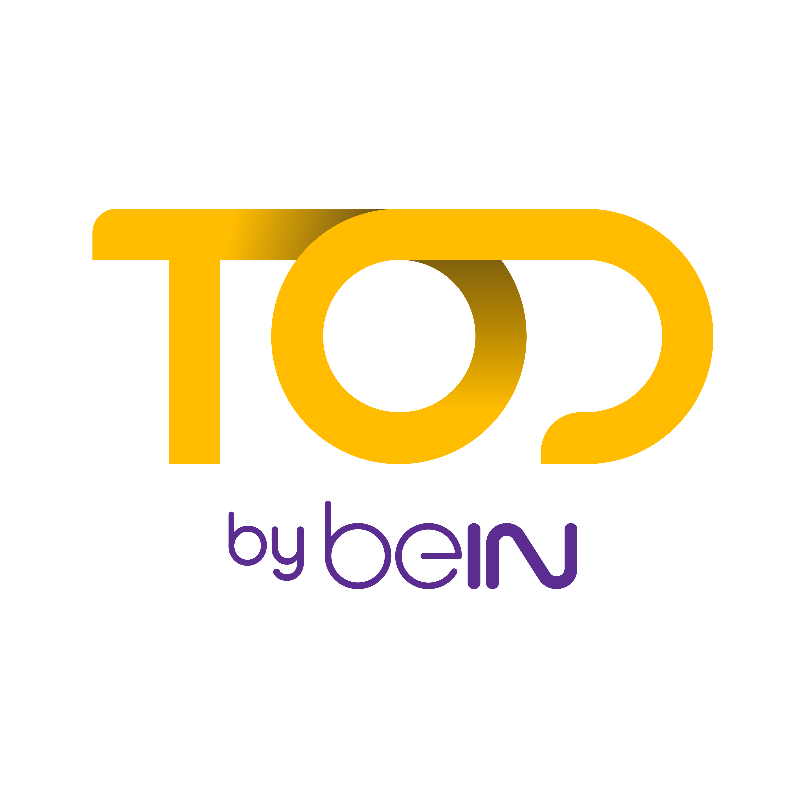
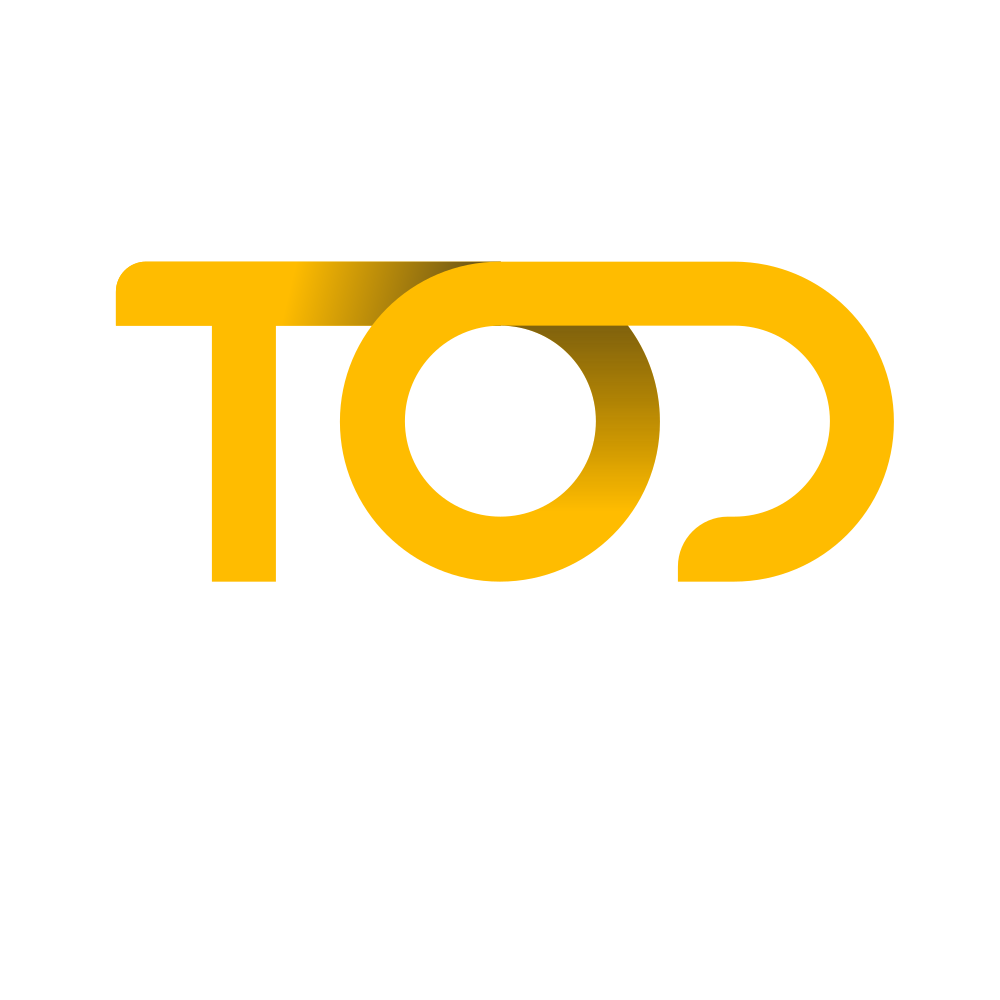
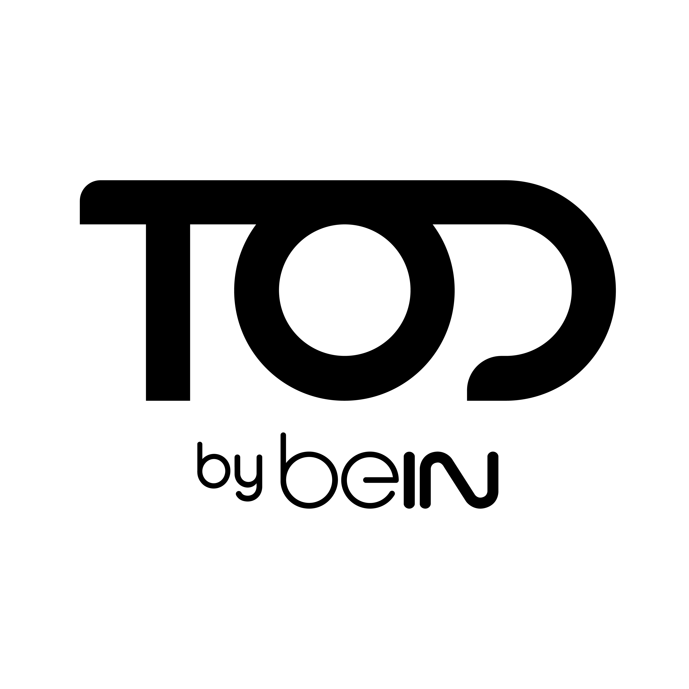
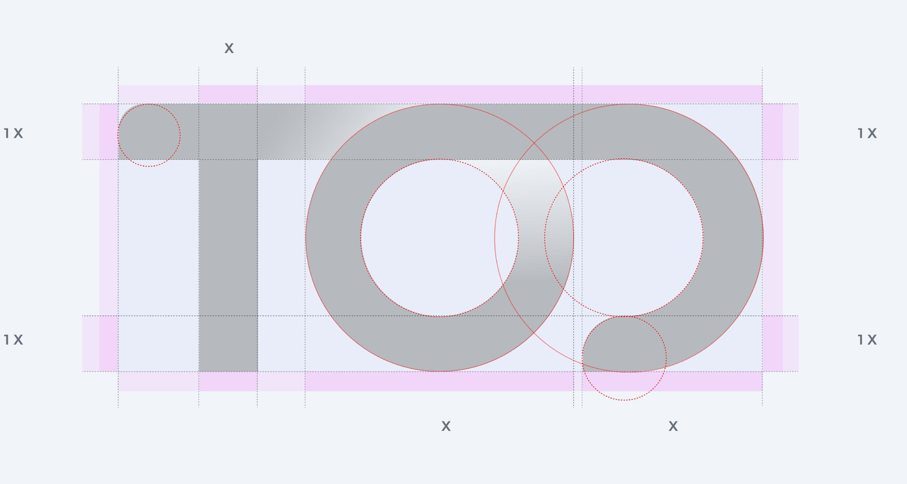
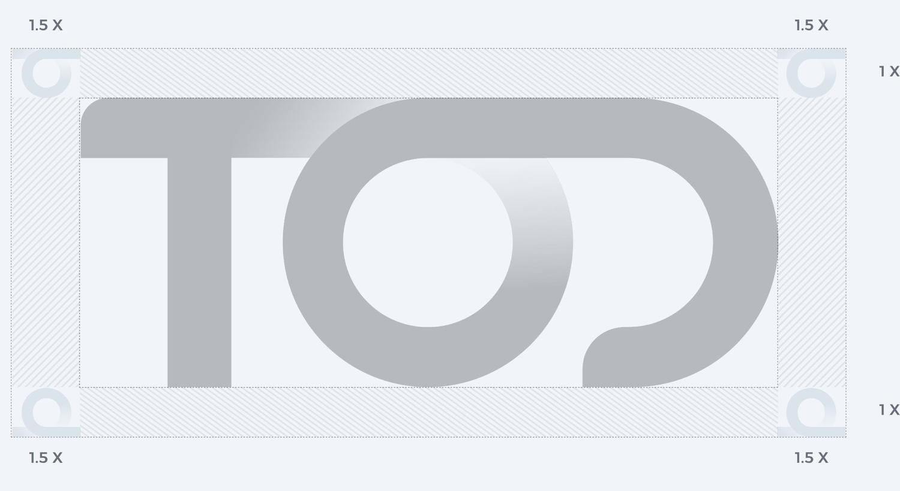
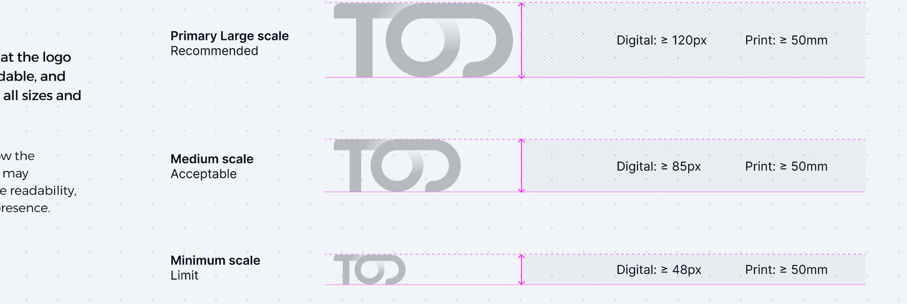

2.6 · Values — SHIP
How we behave.
Four values. One acronym. The behavioural code for how every team, partner, and contributor shows up under the TOD by beIN name.
The essential brand system for TOD by beIN — the core identity kit: brand summary, verbal identity, logo system, and colour & type. A quick-reference master for every team, partner, and contributor shaping how the brand shows up.
This document supersedes all prior brand books. Every decision herein is locked unless flagged COPY-READY, NEEDS DESIGN, or NEEDS LEGAL REVIEW. This is the condensed master — the core identity kit covering brand summary, verbal identity, logo system, and colour & type.
The manifesto, and the four anchors every other module returns to.
We are TOD by beIN — a streaming destination endorsed by the broadcaster audiences already trust, growing market by market. Twenty years of rights, relationships, and rigor stand behind every login. We do not compete on volume. We compete on judgment — the choice of what to carry, the clarity of how to present it, the care with which we deliver every match, every series, every story. One platform. Every screen. Sport and stories, together.
No. 1 Sports & Stories
These are the four locked anchors that govern every module that follows. Every rule in this book is built to protect them.
The name in text & speech.
External: "TOD by beIN" — never "TOD" alone in external comms.
Legal: TOD by beIN, a beIN Media Group product.
Internal shorthand: "TOD" permitted internally only.
Locked line: No. 1 Sports & Stories.
Use case: Brand-level moments only. Closes covers, sign-offs, manifesto films, and master campaigns. Never a feature tagline.
Locked line: Premium content. Without friction. On your terms.
Use case: Articulates what, how, and who is in control. Spoken internally; expressed externally through product and proof, not stated as a tagline.
The logo, in artwork.
Form: TOD wordmark with "by beIN" endorsement locked beneath.
Rule: The endorsement is never stripped. Co-brand contexts may reposition the lockup but never disassemble it.
Purpose · Vision · Mission · Promise · Positioning · Values · Personality · Goals · Audience. Every campaign, product decision, and partner negotiation traces back to these nine elements.
Empowerment, not delivery. Choice, not push. The line that separates TOD by beIN from a feed and from a catalogue. The viewer leads.
Not "more content." Not "global domination." Cultural relevance, emotional leadership, and lasting trust — built market by market, season by season, story by story.
Live football. Premium series. TOD Studios originals. International cinema. Family content. We promise the right things — and deliver them on time, on quality.
A three-part contract. Premium — what we carry. Without friction — how we deliver it. On your terms — who is in control. Break any one, the promise breaks.
We compete on judgment, not volume. The choice of what to carry. The clarity of how to present it. The care with which we deliver every match, every series, every story. Endorsed by beIN, premium-native by design.
Four values. One acronym. The behavioural code for how every team, partner, and contributor shows up under the TOD by beIN name.
Built around real viewing behavior and real moments.
Keep it simple. Stay honest. Take the lead. And have fun.
| Trait | We Are | We Are Not |
|---|---|---|
| Authoritative | The trusted source for what is on. Sourced, accurate, on-record. | Loud. Inflated. Self-congratulatory. |
| Warm | Human. Bilingual. Built by people who love the content. | Corporate. Sterile. Detached. |
| Modern | Streaming-native. Fast. Premium without ornament. | Cluttered. Nostalgic. Over-designed. |
| Confident | Clear about what we carry and why. We do not hedge. | Arrogant. Dismissive. Combative. |
#1 Sport and Stories Streaming App — market by market
Understand, Delight, Retain
Raise Top-of-Mind Recall For TOD
Personalisation at its best
★ Awareness is the 2026 anchor goal. When two goals conflict for budget, Awareness wins.
We segment by motivation. Every campaign maps to one or more of these six archetypes. Marketing decisions are made through their eyes, not ours.
How every adjacent brand connects, defers, or distances itself.
| Tier | Entity | Relationship |
|---|---|---|
| Parent | beIN Media Group | Qatar HQ. The corporate parent. Endorses every product brand. |
| Sibling | beIN Sports | The broadcast sports network. TOD by beIN is its streaming-native counterpart, not its successor. |
| Sibling | Miramax | beIN-owned film studio. Content supplier. Operates as an independent brand. |
| Sibling | Digiturk | Turkish pay-TV operator. Distinct brand, distinct market. |
| Master | TOD by beIN | The streaming destination. Endorsed by beIN. All consumer-facing activity carries this name. |
| Sub-brand | TOD Studios | Originals label inside TOD by beIN. Always read together — never separated. |
| Feature ecosystem | TOD 360 | Branded umbrella for next-gen features (multi-angle, watch-together, stats overlay). Working name — trademark pending |
Samsung, LG, Sony, Hisense, Apple, Google. TOD by beIN logo on store listings & tile art. No composite lockup.
GCC and regional mobile carriers. Telco co-brand kit (Phase 2). Telco logo separated from master lockup by clear-space rule.
FIFA, sports federations, international studios. Tier 1 mega-tournament 80/20 layout (Module 08).
How the brand sounds — in headlines, in support replies, in press statements, in the app.
| Pillar | Definition | Test |
|---|---|---|
| Clear | Say one thing. Say it once. Then stop. We never bury the point under decoration. | If the headline needs a sub-line to explain it, the headline is wrong. |
| Confident | We know the sport. We know the story. We carry the rights. We do not ask permission to lead. | No hedging ("maybe," "we think," "it might be") in brand-level copy. |
| Human | Built by people who love what we serve. Warm where it matters. Never corporate. Never cold. | Read it aloud. If you would not say it to a friend over coffee, rewrite it. |
| Tone | Used For | Sounds Like |
|---|---|---|
| Hype | Live sport, finals, premiere moments, match-day social. | "It is happening. Now." |
| Information | Schedules, fixture lists, programme guides, navigation. | "Liverpool vs Real Madrid. Tonight, 22:00 MECCA." |
| Service | Support, billing, error states, FAQ. | "Something went wrong. We are fixing it. You will not be charged." |
| Premium | Originals, prestige series, awards, master campaigns. | "A story told over six nights. Beginning Friday." |
| Anchor | Brand-level moments. Year-anchor campaigns. Master signature. | "No. 1 Sports & Stories." |
Every line of brand copy is built on at least one of these four pillars.
We carry the rights, the craft, and the curation the region's most discerning viewers expect. We do not chase volume. We invest in quality.
Local fluency, market by market. The calendar, the languages, the partners — all native to where we ship, not translated.
Three taps to play. Fast on every device. The product earns its premium label by removing what no streaming viewer should tolerate.
Match-day, Ramadan, Eid, new season. We do not just carry the moment — we mark it, frame it, and share it with the audience.
TOD by beIN is a premium streaming destination — endorsed by beIN, growing market by market, and home to the sport, films, and series that matter.
TOD by beIN is a premium streaming destination endorsed by beIN — a globally trusted sports broadcaster. TOD by beIN delivers live sport, prestige series, and TOD Studios originals on every screen, scaling market by market.
TOD by beIN is the streaming destination of beIN Media Group. Endorsed by beIN Sports — a globally trusted broadcaster — TOD by beIN combines premium live sport, prestige international series, TOD Studios originals, and international cinema on one platform, available across mobile, web, and connected TV. Multilingual by design, locally curated, and culturally fluent — market by market.

A striking, minimalist wordmark — geometric, confident, and instantly recognizable. It carries the trust of the broadcaster behind it and the premium positioning of the streaming destination it represents.

The logo performs at its strongest on dark backgrounds, where contrast enhances visibility and reinforces TOD's premium, cinematic identity. This is the default — the canonical presentation.
On TOD Yellow, always use the TOD app icon — the wordmark held in the black tile. It keeps the mark legible and premium against the brand colour, never a bare wordmark on yellow.
Five approved presentations cover every brand context. Use these only — never recolor the mark to suit a layout.

Built on a modular 1X grid.Circular shapes use fixed radii for cohesive rhythm; stroke weight is uniform throughout.
Optical corrections refine the geometry where mathematical precision alone would feel off-balance.

Protect the mark from crowding.Keep a minimum of 1X clear on every side; 1.5X for hero placements.
No text, imagery, or competing marks may enter this zone.

Never below the floor.Digital minimum 48 px (56 px for the endorsement to read). Print minimum 8 mm, 10 mm recommended.
Scale the layout to fit the logo — never the logo to fill the layout.

"by beIN" carries the trust. It is structural, not decorative — and it travels with the wordmark on every external surface.
Inside the app, where context already establishes the endorsement, a bare TOD header is permitted.
Where the endorsement is illegible, use the mark-only variant. Never reproduce an unreadable endorsement.
Tier 1 mega-tournament 80/20, where the layout itself carries the endorsement. See Book 05.
Any other context that wants TOD without "by beIN" requires Tier 4 approval (MD, VP, Marketing Director). No team-level exceptions.
Same mark, platform-specific rules. Use the dedicated icon export — never a resized master lockup.
| Platform | Master | Safe area |
|---|---|---|
| iOS | 1024 px | 60% diameter |
| Android | 432 dp · fg 108 | 66 dp zone |
| Web favicon | 512 px | 4 px margin |
| tvOS | 1280 × 768 | centered |
What never happens to the lockup. If a layout needs one of these to work, the layout is wrong — not the logo.
The approved lockup, correctly applied across six surfaces. Always the full TOD by beIN mark — never TOD alone.
Every TOD colour is specified for screen, print, and broadcast. Match to the value system for your medium — HEX/RGB for digital, CMYK for process print, Pantone for spot. Pantone Coated (C) and Uncoated (U) reproduce differently — always specify the right one for the stock.
For joy, culture, energy — stories, social, youth-led campaigns. Apply as a gradient bloom, a striped pattern, or a single accent chip — never as flat brand chrome, and never assigned to a content category. The palette is decorative; the primary pair (Yellow · Navy) always leads.
Gradient stops: Joy Violet 0% → Hot Magenta 38% → Joy Coral 68% → TOD Yellow 100%, at 135°. Used for Eid, the new season, Ramadan, music drops — moments the brand needs to feel alive, not authoritative. The gradient always resolves into TOD Yellow — it never floats free of the brand anchor.
Joy Violet is warm and decorative — Happy Palette only. The Expression Accent purples above are a cooler, distinct hue reserved for one job: signalling that a story carries the weight of the beIN lineage. The two purples are never interchangeable and never appear in the same composition.
Coated (C) values are calibrated for gloss/silk stock; Uncoated (U) for matte/natural stock — they will look different on press, so specify the right one. For premium applications, TOD Yellow may also be reproduced as a metallic spot (PMS 871 C / gold) where the budget and finish allow. Always run a press proof before a large print run.
Two master typefaces carry the brand, one per script — inherited from beIN Media Group. Gotham sets every Latin headline, wordmark, and body line. beIN Arabic sets every Arabic equivalent — co-equal, never an afterthought. They pair at matched optical weight so an AR/EN lockup reads as one system.
Gotham (Hoefler & Co.) and beIN Arabic are licensed, internal-only font files — distributed through the asset library, never embedded in public pages. This brand book therefore renders in Alexandria (Google Fonts), the approved open-licence stand-in for both scripts. On any machine with the licensed faces installed, the same markup renders in true Gotham / beIN Arabic.
All English / Latin-script: wordmark, headlines, body, UI, captions. Weights Book → Black.
All Arabic-script equivalents, matched in weight and rhythm to the Gotham setting it sits beside.
Web, email, and any surface that cannot embed the licensed faces — including this public book. Covers both scripts.
All co-brand creative must be shared with the partner for final approval — and routed through brand@tod.tv before any external release.
No exceptions. This applies to every Tier (1, 2, 3), every surface (digital, OOH, broadcast, social, in-app), every market. Skipping this step puts both the partnership and the brand at risk.
We co-brand by placing the two marks side by side — never by combining, fusing, or redrawing them. No "×", "&", "/", or "presents".
A partner sponsors our coverage, not the event itself. Say "Watch [event] live on TOD by beIN" — never "[event] brought to you by [partner]."
The endorsement carries the trust — it is never stripped or broken apart.
Telcos, distributors, sponsors. Their logo sits secondary in the layout above. Message: "Watch [event] live on TOD by beIN."
FIFA, UEFA, EPL — the rights-holder of what we show. The marks sit side by side with clear space (TOD | Competition), using their official artwork.
This is the short version. Full tier layouts, sizing and clear-space specs, the complete say / don’t message list, and the TOD | Competition content-lockup system (where we’re the official home of a rights-holder’s competition) live in the dedicated Co-Brand Playbook. When in doubt, ask brand@tod.tv.
| Language | Role | Status |
|---|---|---|
| Arabic | Co-equal primary. Native to the heart of the markets we serve. | Locked |
| English | Co-equal primary. Native to a meaningful share of the audience. | Locked |
| Turkish | Co-equal primary. Native to our Türkiye market and its audience. | Locked |
| French | Co-equal primary. Native across France and the Francophone Maghreb — Morocco, Tunisia, Algeria. | Locked |
Each language above is a co-equal primary within the markets it natively serves — never a translation, never an afterthought of another. As TOD's footprint grows, new languages join the hierarchy at this same standard.
TOD by beIN writes in three approved registers only — Light (White) Arabic, Khaleeji, and Fus'ha. These are the brand voice; nothing else is. Mixing registers within a single piece is forbidden — pick one and commit.
In short: the spoken voice is Light Arabic and GCC (Khaleeji) Arabic; Fus'ha carries the formal and product layer.
The default spoken voice. A neutral, "white" dialect with no heavy local markers — understood across the GCC and the wider Arab world. Marketing, social, hype lines, voice-over, trailers.
Gulf-targeted campaigns and local sports culture. Match-day social in the Gulf — especially Qatar and Saudi. Saudi Pro League, Khaleeji creators, GCC national-day moments.
The formal and product layer. UI copy, service messages, billing, support, corporate and press. Formal headlines and pan-regional announcements.
Heavy local dialects — Levantine (شامي), Egyptian (مصري), Maghrebi (دارجة) and the like — are not used as TOD's Arabic brand voice. Keep marketing and brand copy in White Arabic or Khaleeji, and the formal layer in Fus'ha. (Content/title metadata and licensed dubs follow the title's own language — that is separate from brand voice.)
Master lockup flips from top-left to top-right.
Aligns to the right edge of its container.
Match-day yellow tag moves from top-left to top-right.
Scores, times, dates stay LTR within RTL. Spacing unchanged.
| Tier | Scope | Examples | Owner & Brief |
|---|---|---|---|
| T1 · In-template | Operations within locked templates. | Match-day social, in-app banners. | Channel lead · Self-serve. |
| T2 · Campaign | New work within the existing system. | Seasonal campaigns, OOH, broadcast spots. | Brand Manager · 72-hour brief. |
| T3 · Partner / Co-brand | Anything involving a third-party mark. | FIFA rollouts, telco bundles. | Marketing Director + Legal · 5 BD brief. |
| T4 · System change | Changes to the brand system itself. | Logo, palette, type, master signature. | MD, VP, Marketing Director. |
Every brand request — Tier 1 through Tier 4 — is logged through this central alias. No request bypasses it. No exceptions.
Whether it's a fix or a new request, the path is the same — log it in a structured form, let Brand classify it, get the right sign-off, and confirm back.
Email brand@tod.tv with: what & where (surface, market, link/screenshot), impact, timestamp, the severity you think it is, and your deadline.
Brand assigns a severity (B0–B4 · how fast) and an authority tier (T1–T4 · who signs off, see 10.1).
Per the Authority Matrix: channel lead (T1), Brand Manager (T2), Marketing Director + Legal (T3 / partner), MD, VP, Marketing Director (T4 / system change).
The change is made, the raiser is told it's done, and any B0–B2 gets a short post-incident note so it doesn't recur.
Severity (B0–B4) answers how fast. Authority (T1–T4) answers who approves. They combine: a B0 crisis touching a T4 system element (logo, palette, type, signature) pulls in the MD & VP immediately; a B3 fix inside a locked template is self-serve. An unstructured WhatsApp ping or a direct partner email is not an official escalation path.
| Role | In an escalation | Contact |
|---|---|---|
| Marketing Director | Owns the matrix; coordinates the response and exec comms; sign-off on T3 / partner. | Phone / WhatsApp |
| Brand Manager | Triages and classifies; coordinates the fix; first responder for B2–B4. | Email / WhatsApp |
| Legal | Rights, contracts, and partner exposure; co-signs anything touching a third party or rights claim. | Via Brand Manager |
| MD & VP | Notified for B0/B1 and marquee issues; sign-off on T4 system changes. Not contacted for B2–B4. | Phone (B0/B1) |
| Channel / Market leads | May raise issues and self-serve T1 fixes in-template; route everything else via Brand. | Email / Teams |
| Content / Commercial partners | Raise through a defined contact in a structured format. Group-chat adds and unstructured emails are not an official path. | Via brand@tod.tv |
Phone. MD + VP + Marketing Director + Brand Manager + Manager of Communications & Events. Acknowledge ≤ 30 min.
Phone / WhatsApp. Marketing Director + Brand Manager + Manager of Communications & Events. ≤ 2 hr.
B1 minimum, any severity. World Cup · UCL final · AFCON · national day.
WhatsApp / email. Brand Manager. Same / next business day.
Email / Teams. Channel lead or Brand Manager. 72-hr SLA.
Email / Teams. Brand team. Next cycle.
For the five roles most likely to use this brand book. Each names the modules to read first and the question to answer before publishing.
| Role | Read First | Question to Answer |
|---|---|---|
| Brand Manager | Modules 01, 02, 04, 08, 10 | Does this campaign ladder up to a PACE goal and a messaging pillar? |
| Designer / Agency | Module 05, Book 02 (Logo System), Book 04 (Design System), Module 08 | Is every element on the surface in the locked color, type, and logo system? |
| Copywriter | Module 04, Module 09, Book 03 (Voice & Language) | Have I matched the right tone for this surface, in the right register for this market? |
| Channel / Social Lead | Module 04, Book 08 (Social & Live) | Am I inside a locked template, or am I escalating to a T2 request? |
| Partnerships / BD | Modules 03, 08, 10 | Does this partner deal fit T1, T2, or T3 approval path? |
A locked element of the brand system that cannot be edited without a Tier 4 approval. Examples: master signature, brand promise, master lockup.
The structural relationship of brands and sub-brands inside beIN Media Group. See Module 03.
Pre-approved short / medium / long brand description, used in PR, press releases, and corporate decks.
Any appearance of TOD by beIN alongside a third-party mark. Governed by Module 08.
A merged single mark formed from two or more brand logos. Forbidden under Rule 01. See Module 08.
The "by beIN" descriptor locked beneath the TOD wordmark. Carries the trust of the parent.
The official TOD wordmark with "by beIN" endorsement. The canonical brand mark.
The line that closes brand-level moments. Locked: "No. 1 Sports & Stories."
The 2026 goal framework: Product, Awareness, Customer, Engagement.
The values framework: Simplicity, Honest, Innovative, Passionate.
The umbrella name for next-gen features (working name; trademark clearance pending).
The originals label inside TOD by beIN. Always read together; never separated.
Contextual variation of voice. Five tones: Hype, Information, Service, Premium, Anchor.
The consistent brand personality in language. Three pillars: Clear, Confident, Human.